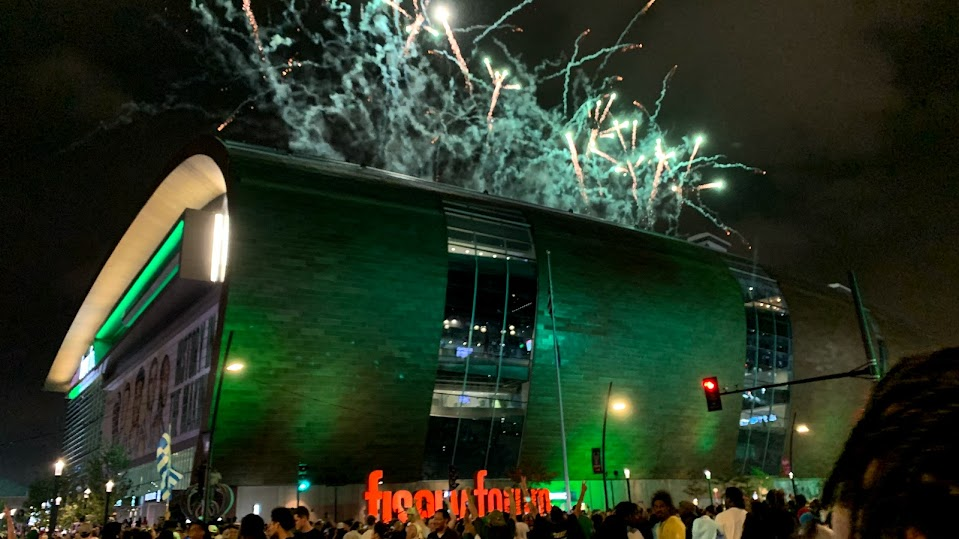
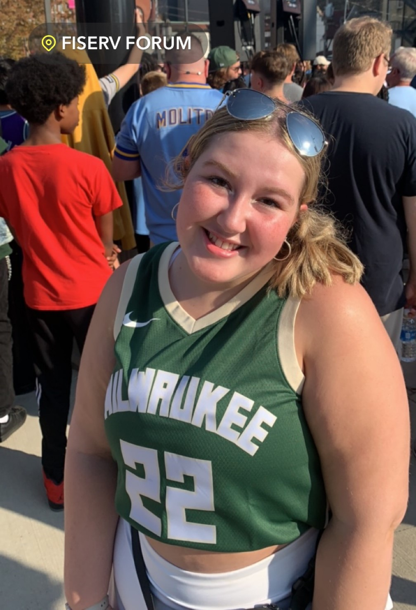
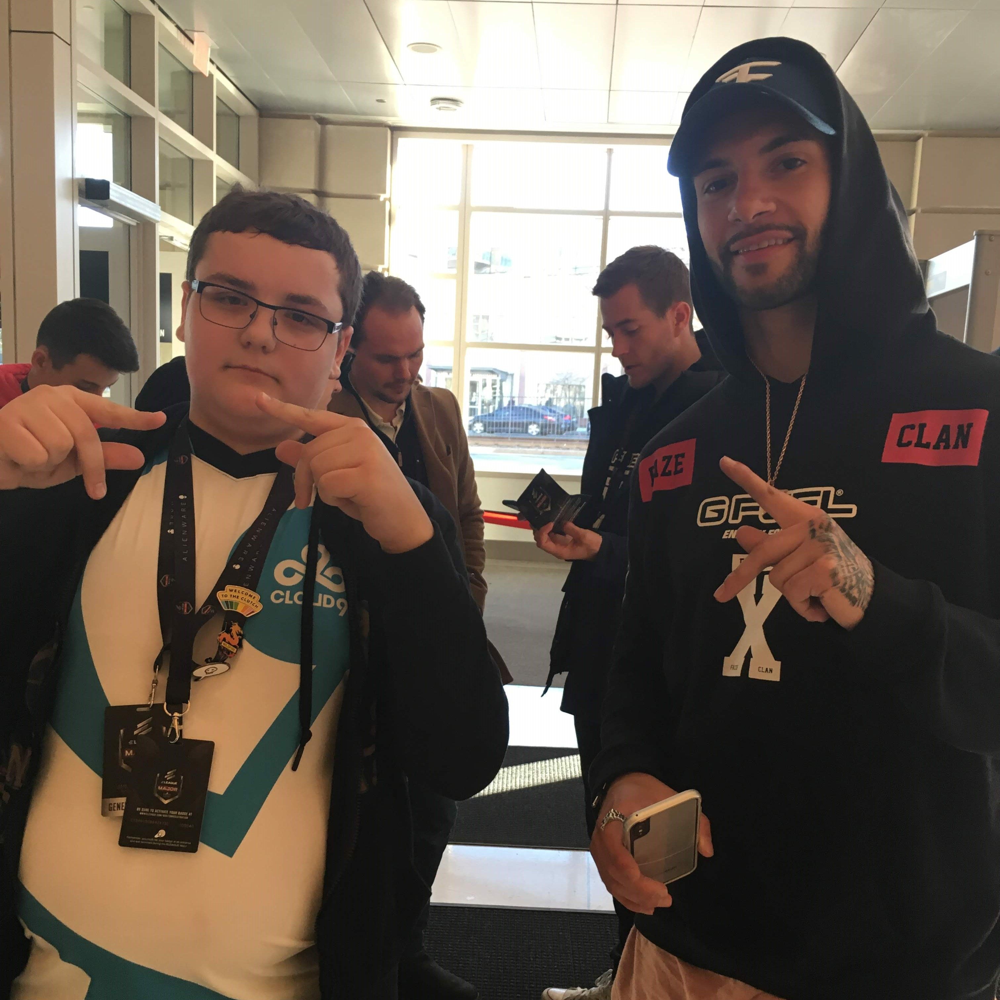
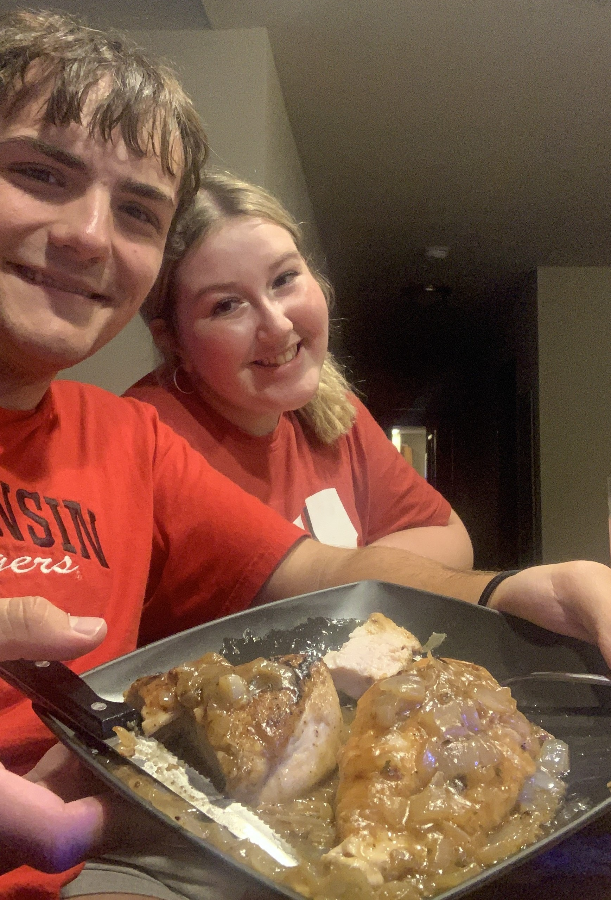
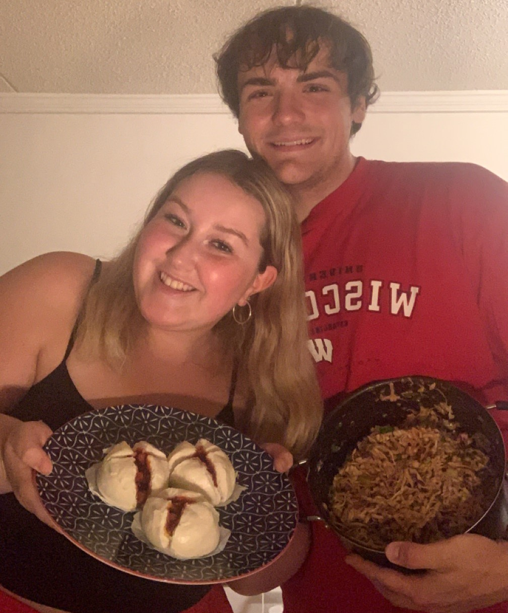

I was really into computers and video games
when I was a kid, so as I grew up I became set on Computer Science.
In high school, I took a big interest in sports and did intramural basketball my
senior year, my first time playing an organized sport since recording one hit
across three seasons of rec-league baseball in middle school.
Personal Interests
Making Media
In high school, I bought myself a new computer and it gave me a lot more
opportunities to make digital media than the laptop I’d had for the
prior six years. I took a big interest in making media for fun, and I’d
found a website that offered what was essentially Photoshop for free. I
started making a lot of images for fun on there, and I started making
videos for my Youtube channel for fun again. When I was really young, I
wanted to pursue being a Youtuber as a career, but now my dream career
is to be in charge of marketing for a sports team or brand I enjoy. I
took a few classes on marketing in high school, which gave me a lot of
opportunities to make media for tangible purposes outside of just being
a hobby. Nowadays, I make a variety of different media for fun such as:
Videos on my Youtube Channel
Art for Work or my Personal Intersts
Occasional Photoshops
Sports
I never really had any interest in sports before high school. I played soccer
when I was six and quit after one year because I kicked someone in the shin
fighting for the ball, and they started crying. In middle school, I did
baseball over the summer, which I briefly referenced in the Personal Life
portion of this page. Once we were in quarantine, my friends and I started
playing football on the field nearby every Wednesday as we were off school
then. I started watching basketball and football religiously in sophomore
year of high school too, and I took a liking to the Bucks, Packers, and
Chargers. When the Bucks were in the finals, my friends and I would go to
Buffalo Wild Wings for every game, and for game six we were in the Deer
District. I have yet to go to my first NFL, NBA, or NHL game, but I’ve
been to a few Brewers games too. I don’t follow hockey or baseball too
closely anymore, but at one point I was trying to juggle all four major
sports, but for now it’s just basketball and football for me.


Video Games
I have been playing video games my entire life. I started playing games on
the computer when I was three, and soon after I got a DS and it spiraled
from there. Fifteen years later and I have a huge collection taking up a
whole shelf in my house. My older brother used to come over on the weekends
and we’d play through Halo 2 on my original Xbox. My parents and I would play
on the Wii together for an hour or so every night when I was really young.
I would ask my mom if I could go over to my older cousin’s house just so I
could play Call of Duty, since she wouldn’t let me own it. In middle school,
I started collecting games from garage sales and flipping the games I didn’t
really want on Facebook Marketplace. My collection kept on growing and it
funded itself with me selling off games as I bought them. For a little bit
during high school in between jobs, I sold video games full time online. I
still play a decent amount nowadays, but nothing near what I used to. I was
attached to Counter-Strike for a long time, to the point where my mom and I
took two trips, one to Chicago and the other to Boston to watch professional
tournaments during my freshman year of highschool. Although the amount I’ve
been playing video games since college started has been diminishing, I still
hold them to be a sizable interest of mine and I try to keep up with all of
the news surrounding them.

Collecting
In addition to collecting games, I have many other collections I’ve built
up over the years. My first collection was my coin collection, spurred on
by seeing my Dad’s coin collection. On the weekend, we would go to Rick’s
Olde Gold at the Hilldale Mall, and I would have a $5 limit, so I would
search and search through their clearance coins bin. The second collection
of mine was a little bit more out there as I somehow decided to collect
stamps. My stamp collection didn’t really compare to the coin collection,
and to this day it’s pretty small in comparison to my other collections.
I also didn’t get very in depth with researching stamps either, so I feel
that likely led to my fascination burning out so quickly with it. My third
collection was pins. I didn’t have a specific sort of pin I collected, but
I did enjoy finding older political pins because I had a major interest in
history at the time. After that, I began collecting video games, which I
talked about above. And finally, in high school, I began collecting sports
jerseys. I didn’t want to spend $100+, however, so my collection was mainly
from Facebook Marketplace and the clearance section on Fanatics. I will admit
I have some very obscure jerseys, like my Philip Rivers Colts jersey, but my
favorite has to be either my gold Hakeem Olajuwon jersey or my Kareem
Abdul-Jabbar Bucks jersey. In recent years, the only collections that have
expanded are my video game and jersey collections.
Cooking/Baking
When I was growing up, both of my parents loved to cook and bake. A
whole section of our dining room was dedicated to cookbooks and family
recipe binders. We would make my grandma’s recipe for Polish rice balls
every Christmastime as a family. My parents would get me involved in
making dinner as a kid and it made me love cooking. I love doing really
complicated recipes, and my family is always putting in a request to
take home my next batch of chocolate chip cookies. Now that I am out of
dorms, I have found my love for cooking again, and it has been a
necessity as eating out is so expensive. My girlfriend and I have been
collecting recipes every week and trying them out since we moved in to
our apartments last year to keep cooking interesting.


Music
Most people like music as well, so this interest isn’t inherently special.
However, I do think my personal connection to music makes it a little more
interesting. I listen to a wide variety of music because I got my taste
from my whole family. My dad got me interested in classic rock and country,
while my mom was a big fan of disco and funk, along with heavy metal. My
brother’s interest in rap and my sister constantly listening to R&B in the
car influenced the majority of what I listen to nowadays though. I try to
branch out here and there. Most of my friend’s recommendations have come
from my best friend, Adrian, who got me to start listening to newer rap,
or my girlfriend getting me to listen to all of the Taylor Swift albums
and rank them. I’ve also been to a few concerts over the years, which
makes each of them really memorable to me. My first concert was Pitbull
at Summerfest with my mom, she loved it, I had an alright time. A few
years later, I saw Yung Gravy at the Majestic in Madison in 2018. I
brought my CD my brother had gotten me for Christmas and he signed both
the CD and my shoes. The next year I went to Ice Cube with two of my
friends and my brother at The Rave for my fourteenth birthday. Then,
right before college started, I saw Kendrick Lamar at Fiserv Forum with
my friend, Adrian. Two summers ago I went to a free Spinners concert in
Illinois. The music I listen to has a personal connection to it, and as a
result has acted as a major emotional outlet for me. If you’re interested
in sampling my music taste, I’ve linked my Spotify right here.